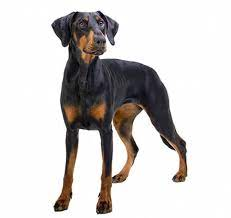

A discapito delle credenze più diffuse, anche il Dobermann è nella top five dei cani più intelligenti del mondo. Deve l'origine del suo nome al suo “creatore”, Karl Friederich Louis Dobermann: la razza ha cominciato a diffondersi all'inizio del XIX secolo dalla Turingia, in Germania. Noto ai più per il suo utilizzo come cane da guardia, si caratterizza per un carattere molto forte: non è dunque un cane da tutti.